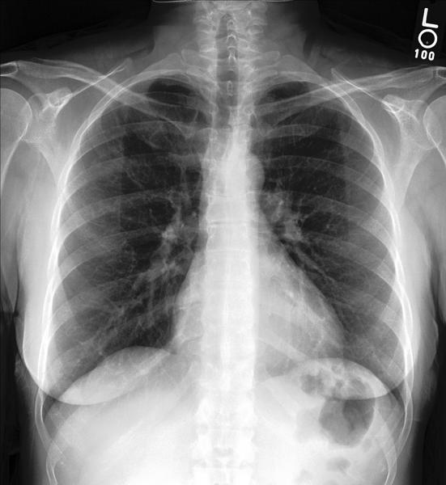
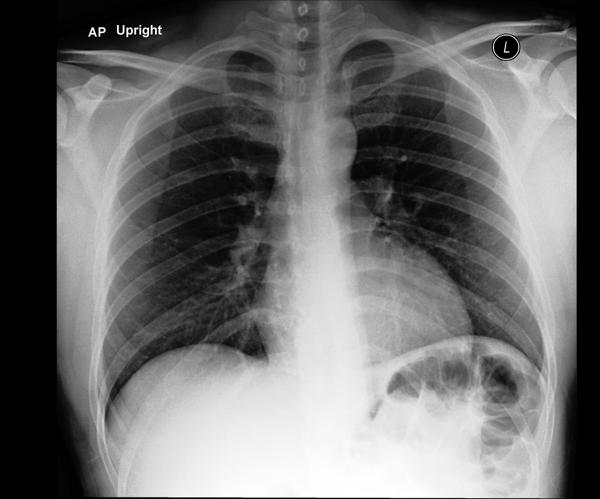
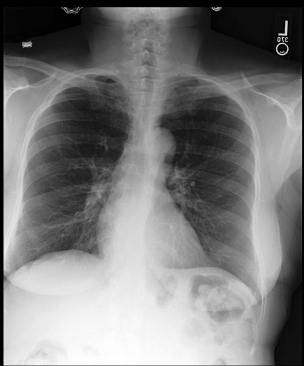
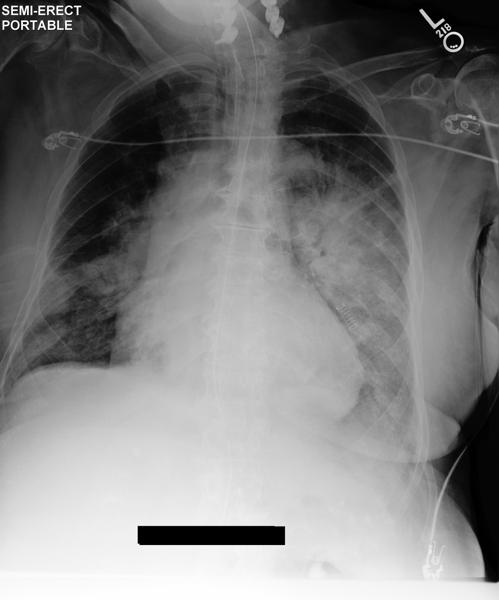
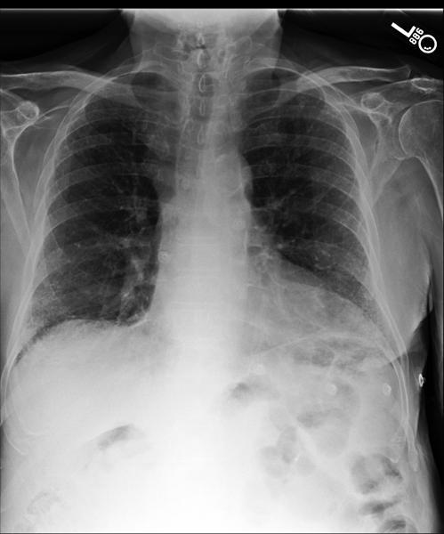

Five paired samplesPatient 18142592 / Study 59333749

No previous images. There is mild hyperexpansion of the lungs, raising the
possibility of some underlying chronic pulmonary disease. No evidence of
acute pneumonia, vascular congestion, or pleural effusion.
Patient 16348266 / Study 58346371

Cardiac silhouette size is normal. Mediastinal and hilar contours are normal.
Pulmonary vasculature is normal. Lungs are clear. No pleural effusion or
pneumothorax is seen. No acute osseous abnormality is visualized.
Patient 10511446 / Study 59279501

Heart size is normal. Mild tortuosity of the thoracic aorta is
unchanged from ___. Hilar contours are unremarkable. Lungs are clear.
Pleural surfaces are clear without effusion or pneumothorax.
Patient 17031760 / Study 52025753

There is no evidence of pneumothorax. The bilateral lungs and
cardiomediastinal silhouettes are unchanged in appearance compared with the
prior study with bilateral opacifications suspicious for pneumonia or
aspiration. There has also been interval repositioning of the endotracheal
tube, which is now in appropriate position, terminating 4.3 cm above the
carina. The nasogastric tube has also been repositioned since the prior
study, coursing below the diaphragm with side hole below the level of the
diaphragm, but near the gastroesophageal junction, and could be advanced
several cm.
Patient 15021516 / Study 52956458

Mild cardiomegaly is present with a left ventricular predominance.
Mediastinal and hilar contours are unchanged with mild atherosclerotic
calcifications seen in the aortic arch and descending thoracic aorta. The
pulmonary vasculature is not engorged. Increased interstitial opacities are
noted diffusely with reticulation and honeycombing at the lung bases, findings
compatible with a chronic fibrosing interstitial lung disease, not
substantially changed in the interval. No new focal consolidation, pleural
effusion or pneumothorax is present. No acute osseous abnormality is
detected.